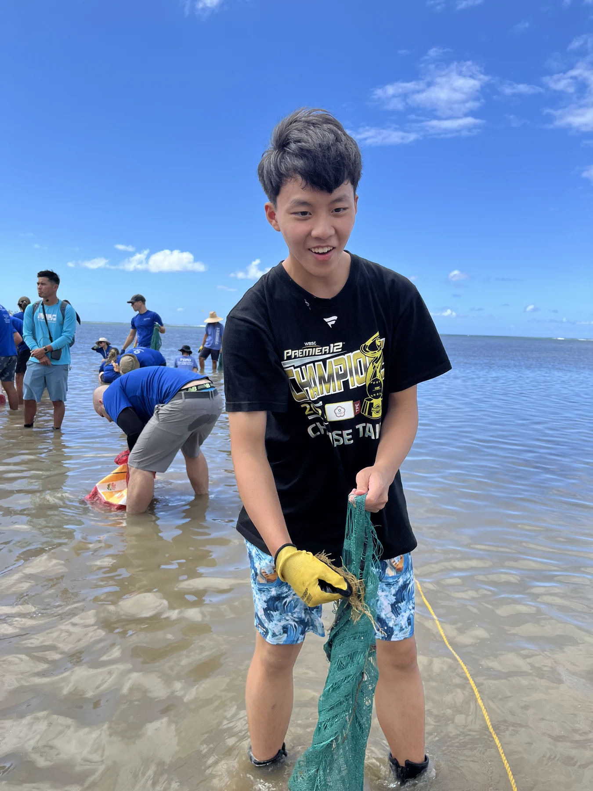

About / Benjamin Sung · 宋其軒
Follow
the threads.
Code, robots, coral, and a badminton racket.
Here’s how they connect.
A map of my curiosity
Every photo opens a story ↗The common thread

Always
connecting dots.
Student. Builder.
Still figuring things out.





Different interests. A shared curiosity about how things work.
Hover or focus to follow a threadA little context
Build. Test.
Understand.
I’m a Grade 12 student at Wego High School International Program in Taiwan, drawn to environmental engineering.
Programming gives me tools. Robotics makes me test them. Field learning gives me new questions to ask.

Chi-Hsuan Sung / 宋其軒
Inside my toolkit
Code
C++ · Python · data structures · algorithms
Control
PROS · PID · odometry · STM32 · Jetson · ROS 2 Humble
Vision
YOLO · annotation · evaluation · exploratory ByteTrack tests
Field learning
Coral conservation · environmental observation · exposure to GIS, SfM, and monitoring methods